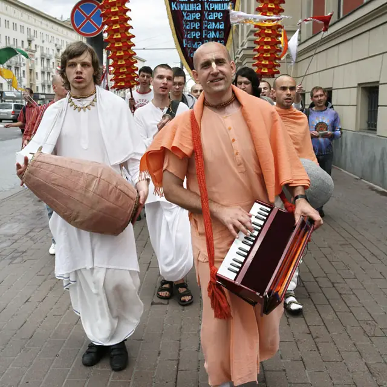
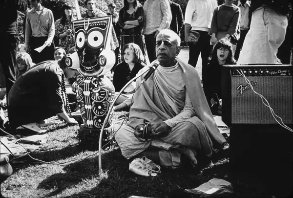
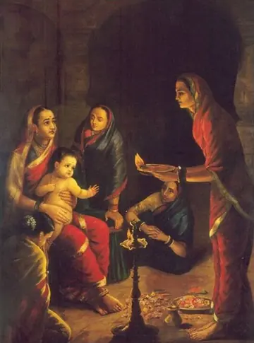
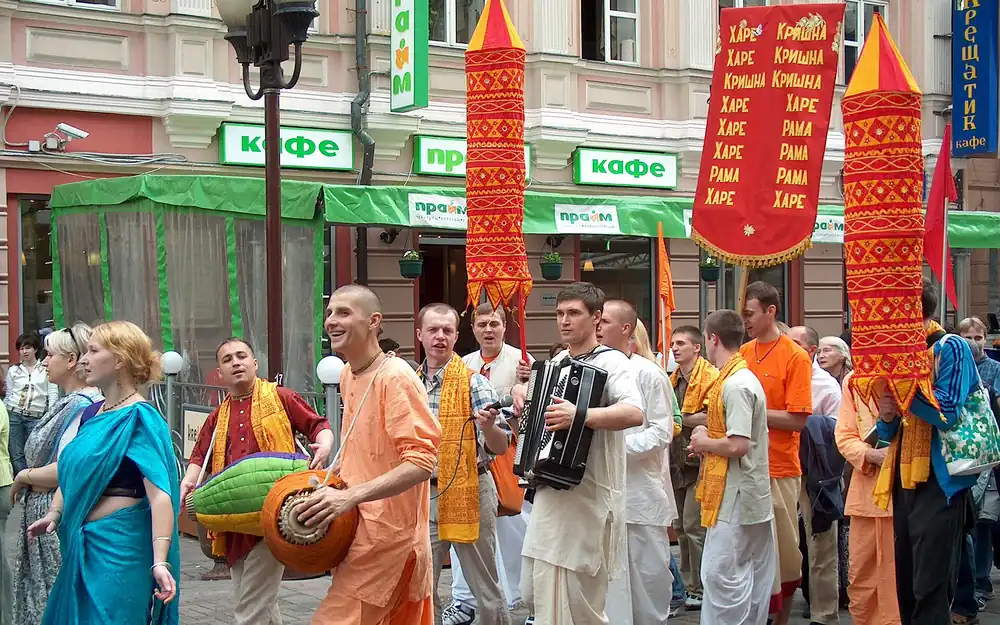
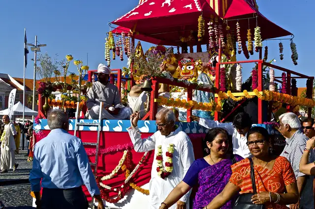
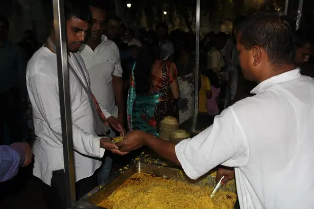

Древна духовна традиция · жив път днес
Общество за Кришна съзнание
Вероизповедание от традицията на Гаудия ваишнавизма: пътят на бхакти, любящата преданост към Бога, познат в Бхагавад-гита и Шримад Бхагаватам.
Намерете ни
Докоснете дума за значението ѝ
Едно вероизповедание, част от световна духовна общност
Обществото за Кришна съзнание е българското вероизповедание на Международното общество за Кришна съзнание (ИСКОН), духовно движение, основано през 1966 г. в Ню Йорк от Бхактиведанта Свами Прабхупада. То принадлежи към ваишнавизма, един от главните клонове на индийската духовна традиция, който почита единия Бог като върховна личност.
В България изповеданието присъства от 1991 г. и е регистрирано вероизповедание, самостоятелно юридическо лице с дейност в цялата страна. Нашата мисия е да съхраняваме и споделяме това древно знание: чрез богослужение, образование, благотворителност и издаване на класическата ведическа литература.

Накратко
- Традиция
- Гаудия ваишнавизъм
- Основател
- Бхактиведанта Свами Прабхупада (1896–1977)
- Основни текстове
- Бхагавад-гита, Шримад Бхагаватам
- Главна практика
- Възпяване на маха-мантрата Харе Кришна
- В света
- стотици храмове, центрове и общности
- В България
- вероизповедание от 1991 г.
„Истинската религия означава да опознаем Бога и да Го обикнем, а средството за това в нашата епоха е възпяването на светите Му имена.“
Философията накратко
Ученията на Кришна съзнание отговарят на най-дълбоките въпроси на човека: Кой съм аз? Какъв е смисълът на живота? Какво е Бог?
В сърцевината на нашето учение стои разграничението между материята и духа. Тялото е материално и преходно, но в него обитава вечна духовна същност, душата. Когато душата забрави връзката си с Бога, тя се отъждествява с тялото и търси щастие в материалния свят, преминавайки през повтарящи се раждания и смърти според закона на кармата. Духовният живот започва с пробуждането от това забравяне.
Кришна: Бог като личност
Абсолютната Истина като върховна личност, изпълнена с любов и красота.
Душата, кармата и прераждането
Кои сме всъщност и как действат законите, които управляват живота ни.
Бхакти йога и маха-мантрата
Пътят на любящата преданост и възпяването на светите имена.
Свещените текстове
Бхагавад-гита, Шримад Бхагаватам и ведическата мъдрост.
Начин на живот
Вегетарианство, прасадам и четирите принципа на чистия живот.
Практика и празници
Богослужение, киртан и празничният календар на общността.

Бхакти йога е пътят на любящата преданост, най-достъпният духовен метод, открит за всеки.
Главната практика на бхакти йога е възпяването и повтарянето на светите имена на Бога. В традицията на Шри Чайтаня тази практика (наречена санкиртана, когато се извършва съвместно) е обявена за духовния метод, особено препоръчан за днешното време. Светите имена могат да се възпяват свободно, навсякъде, от всекиго.

Харинама на улица „Арбат“, Москва
Практика и празници
Богослужението, музиката и празниците са сърцето на живота на общността, открити за всеки гост.
Богослужение и киртан
В центровете на изповеданието ежедневно се провеждат служби, които включват възпяване на светите имена (киртан), молитви, четене и обсъждане на свещените текстове и предлагане на храна на Бога. Киртанът, съвместно пеене с традиционни инструменти, е особено характерен и създава радостна, обединяваща атмосфера. Гостите са добре дошли да наблюдават или да участват.
Неделни програми
Много центрове провеждат седмична открита програма с киртан, лекция върху Бхагавад-гита или Шримад Бхагаватам и споделено вегетарианско угощение (прасадам). Това е най-достъпният начин човек да се запознае отблизо с традицията.
Празничен календар
Джанмащами
Празникът на появата на Кришна, един от най-големите в годината.
Гаура Пурнима
Появата на Шри Чайтаня Махапрабху.
Ратха ятра
Празникът с колесница: шествие из града, открито за всички.


Благотворителност: „Храна за живота“
Грижата за ближния е неотделима част от практиката. Чрез програмата „Храна за живота“ (Food for Life) общността раздава безплатно осветена вегетарианска храна на нуждаещи се, една от най-широко разпространените благотворителни инициативи от този вид в света, провеждана и в България.
Кришна съзнание в България
От тихото начало в годините преди демократичните промени до признат и устойчив религиозен живот днес.
- 80-те години на ХХ векПърви последователи и неофициално разпространение на ученията.
- 1991 г.Официална регистрация като вероизповедание.
- От средата на 90-те годиниЦентрове, издаване на книги и ежегоден фестивал Ратха ятра.
Центрове и общности в България
Обществото за Кришна съзнание развива дейност в цялата страна, чрез храмове, центрове и местни общности (намахатти). Всички те са открити за гости.
- София
- Пловдив
- Варна
- Бургас
- Стара Загора
- Русе
Местна общност и програми. Данни за контакт: в процес на допълване.
Свещената литература и Бхактиведанта бук тръст
Книгите са основата на изповеданието, изворът, от който всеки може да почерпи знание от първоизточника.
Бхактиведанта бук тръст (БиБиТи) е учреден от Шрила Прабхупада през 1972 г. и е най-големият издател на класическа ваишнавска и ведическа литература в света. Той издава и съхранява преводите и коментарите на Прабхупада, както и трудове, които разясняват философията, богословието и културата на бхакти йога. Книгите на тръста са преведени на над 80 езика и се разпространяват по целия свят.
Бхагавад-гита каквато е
Най-известният духовен текст на Индия с превод и коментар на Прабхупада.
Шримад Бхагаватам
„Зрелият плод на ведическото знание“, в многотомно издание.
Шри Чайтаня-чаритамрита
Житието и ученията на Шри Чайтаня Махапрабху.
Нектарът на предаността
Наука за същината на бхакти, пътя на чистата преданост.
Маха-мантрата
Харе Кришна, Харе Кришна, Кришна Кришна, Харе Харе Харе Рама, Харе Рама, Рама Рама, Харе Харе
Намерете ни
Тази мантра се нарича маха-мантра: „великата мантра за освобождение“. В нея се обръщаме към Бога (Кришна и Рама) и към Неговата вътрешна духовна енергия (Харе) с молба за любящо служене. Възпяването ѝ пречиства съзнанието, успокоява ума и пробужда заспалата любов към Бога. Практикуващите я повтарят както съвместно с музика (киртан), така и тихо, броейки на молитвена броеница (джапа).
Гостите са добре дошли да наблюдават или да участват.
гр. София, кв. „Малинова долина“, бул. „Климент Охридски“ 119